Индукционная доступность
Антон Есауленко


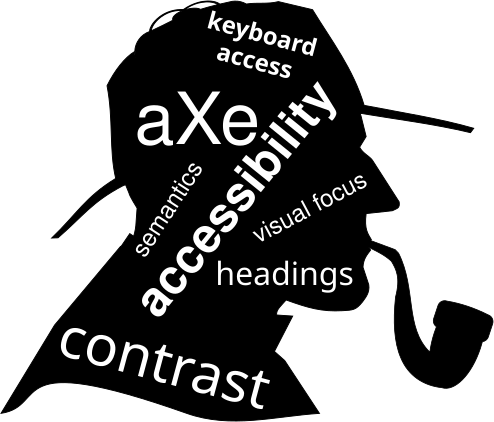
Антон Есауленко, Сбербанк-Технологии
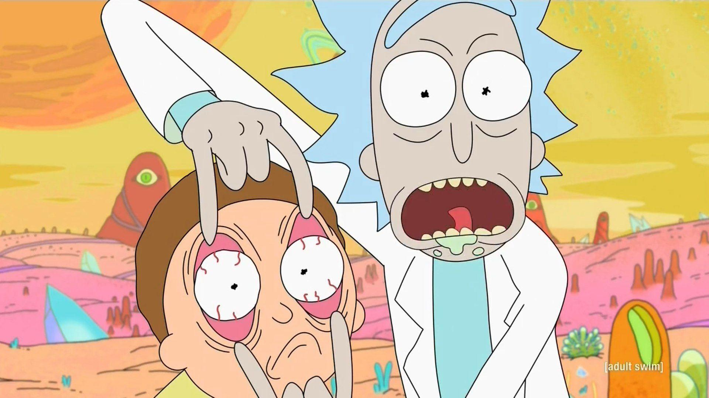
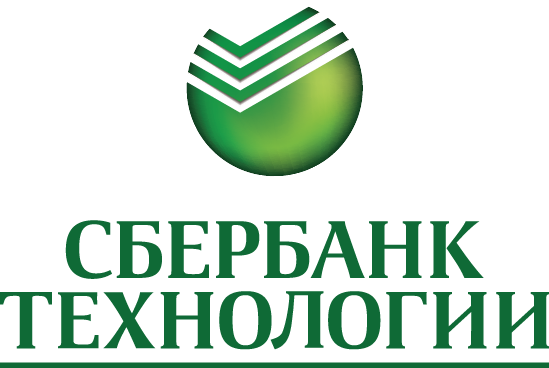
С большой силой приходит большая ответственность.
Бенджамин «Бен» Паркер
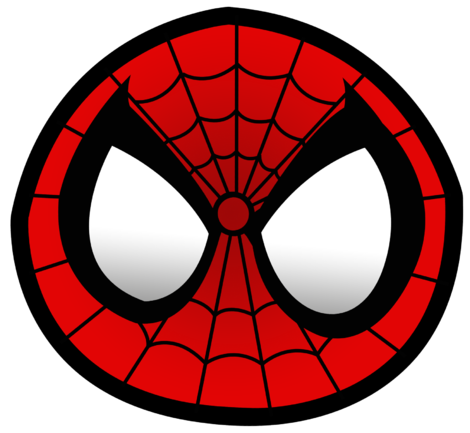
Философский и вообще научный метод движения знания от отдельного, особенного к всеобщему, закономерному
Философский энциклопедический словарь. 2010
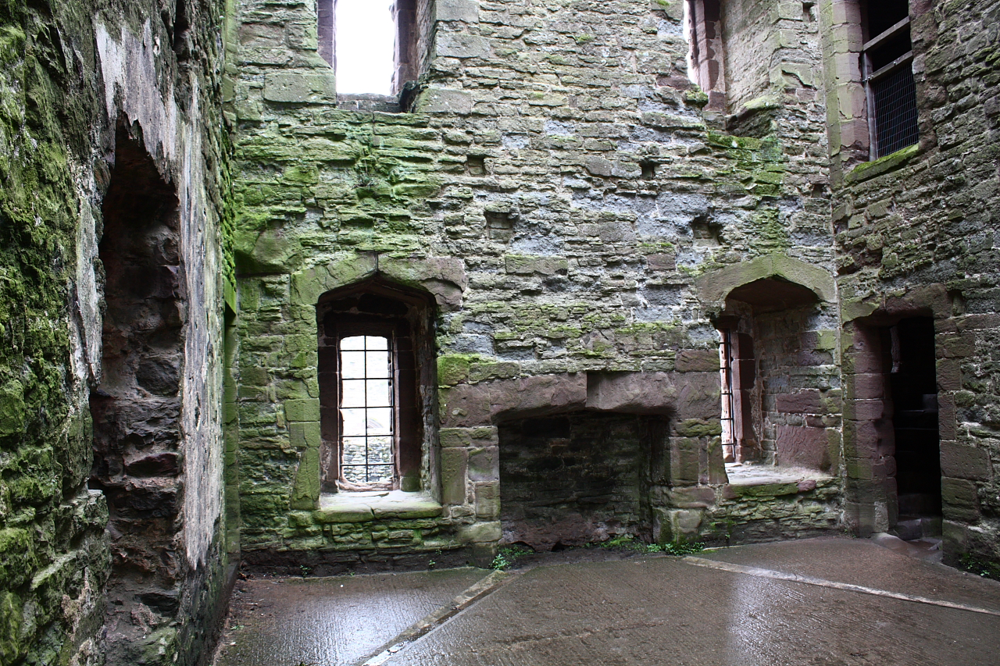
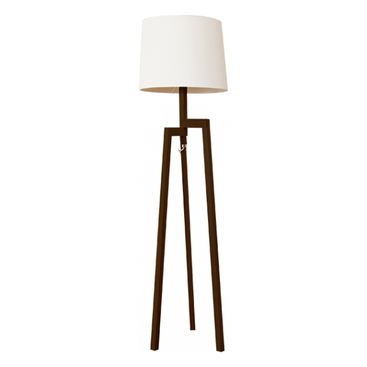
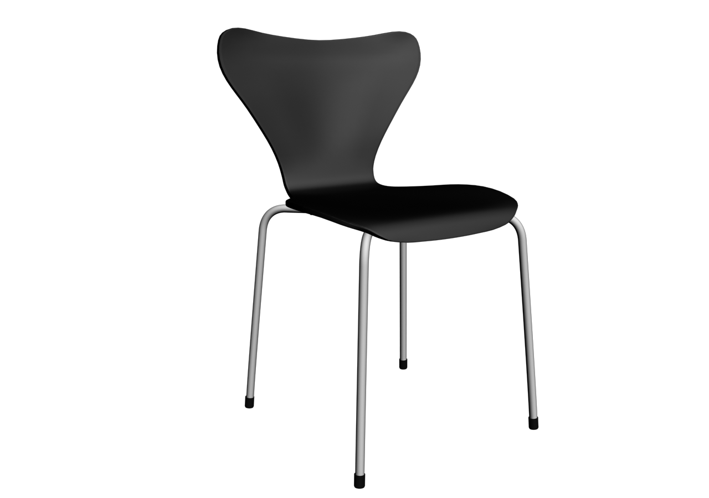
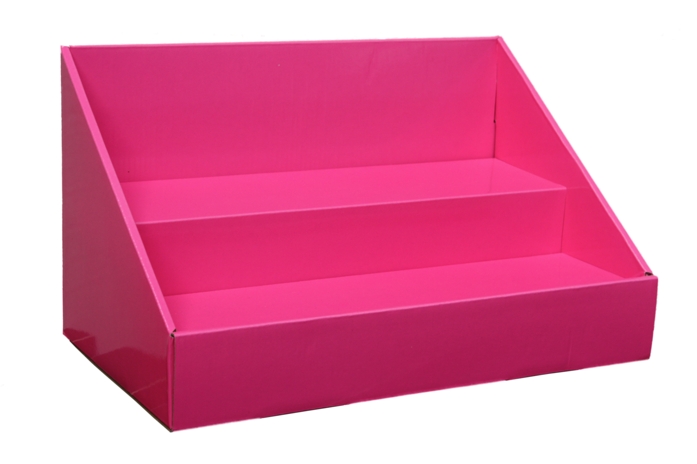
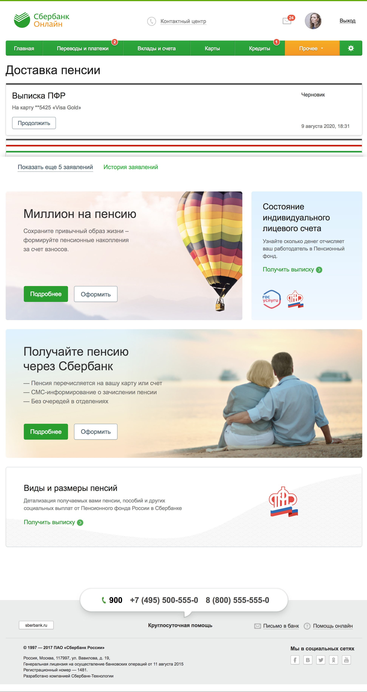
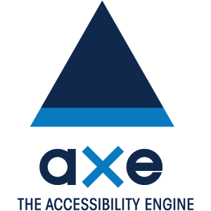
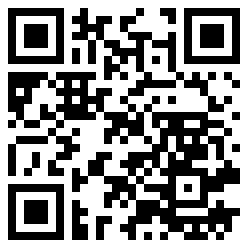
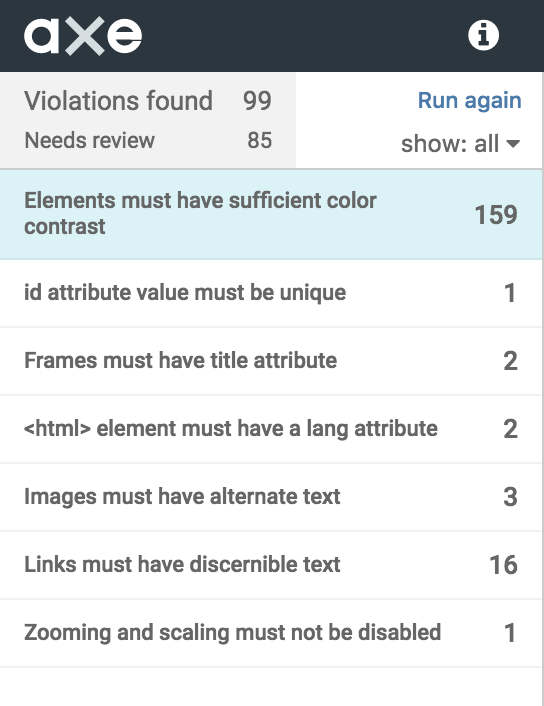
Фолбэк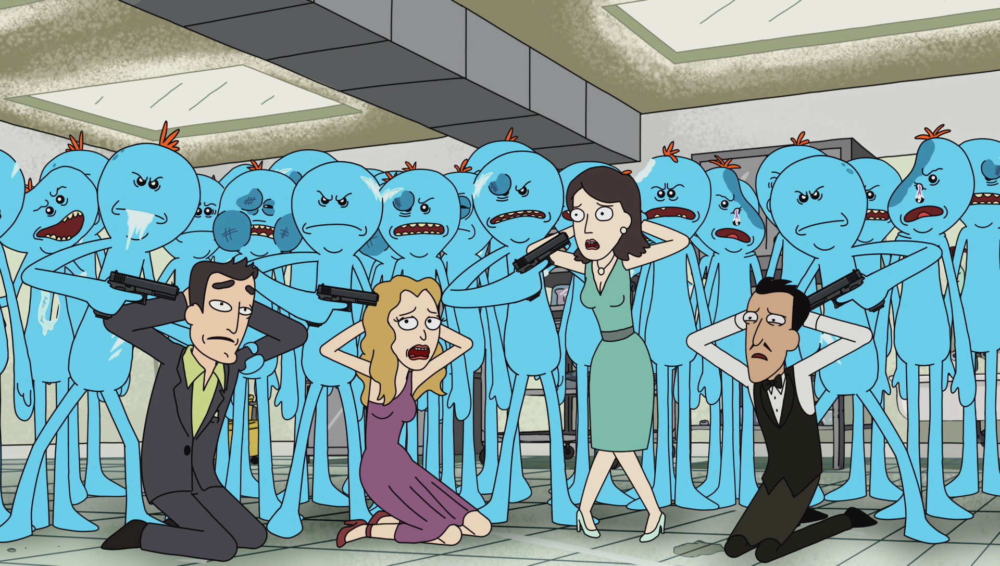
axe <url>
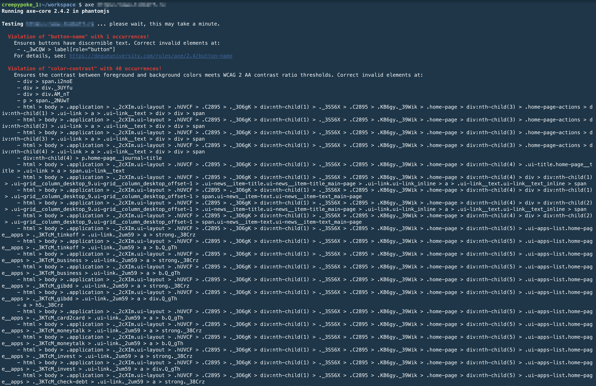
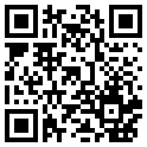
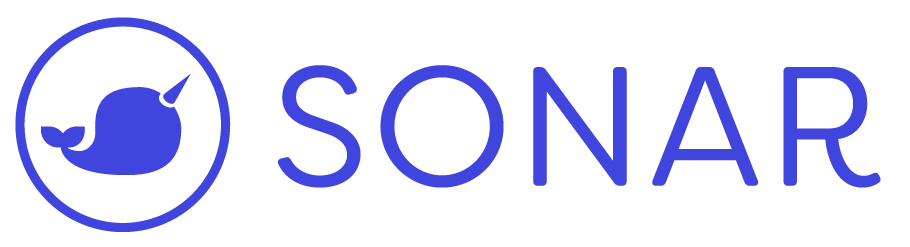
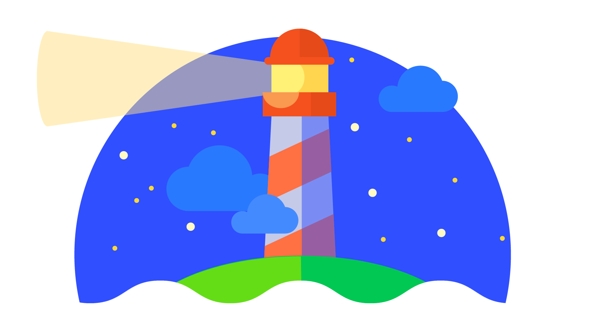
=
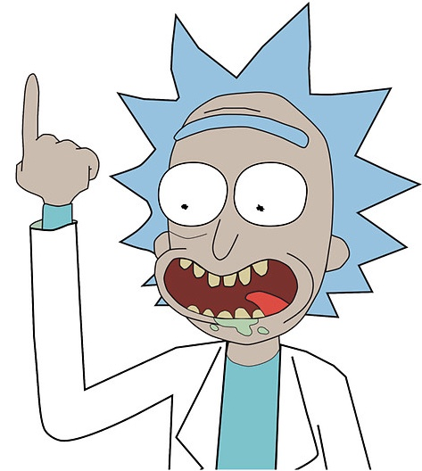
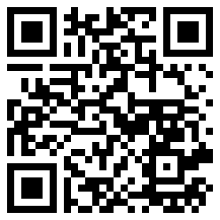
{"plugins": ["jsx-a11y"]"rules": {"jsx-a11y/mouse-events-have-key-events": "error","jsx-a11y/alt-text": ["warn', {"elements": ["img"],"img": ["Icon"]}]}}
<modal><Icon name="close-cross"alt="Закрыть модальное окно" /><main>Контент</main></modal>
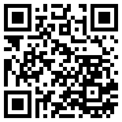
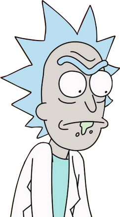
Учёные долго скрывали это. Для того чтобы писать юнит-тесты для проверки доступности необходимо всего лишь...
it ('a11y check', async function() {const wrapper = (<Super Component />)const result = await a11yCheck (wrapper)expect(result.violations.length).toBe(0)}
import axe from 'axe-core'function a11yCheck (ReactComponent) {const wrapper = mount (ReactCompontn)result axe.run (wrapper.getDOMNode()).then(resolve, reject)}
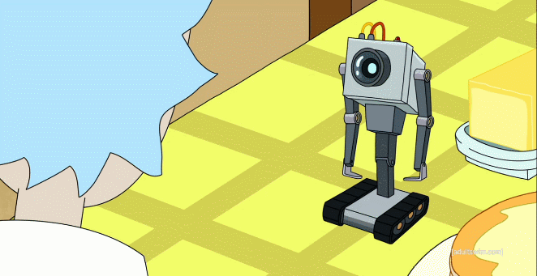
— Каково моё предназначение?
— Тестировать бизнес процессы
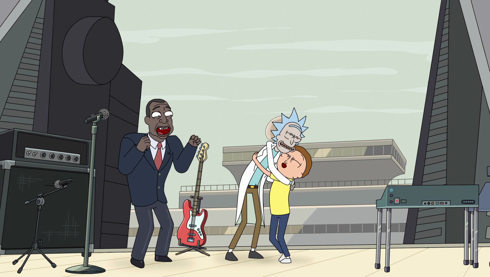
Nils Frahm is a German musician, composer and record producer based in Berlin. He is known for combining classical and electronic music and for an unconventional approach to the piano in which he mixes a grand piano, upright piano, Roland Juno-60, Rhodes piano, drum machine, and Moog Taurus.
Agnes Caroline Thaarup Obel is a Danish singer/songwriter. Her first album, Philharmonics, was released by PIAS Recordings on 4 October 2010 in Europe. Philharmonics was certified gold in June 2011 by the Belgian Entertainment Association (BEA) for sales of 10,000 Copies.
Fear of complicated buildings:
A complex complex complex.
type Props = {a11y: {prefix: string}}
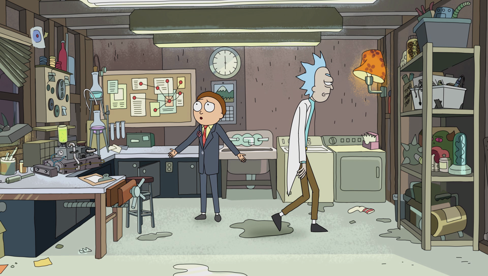
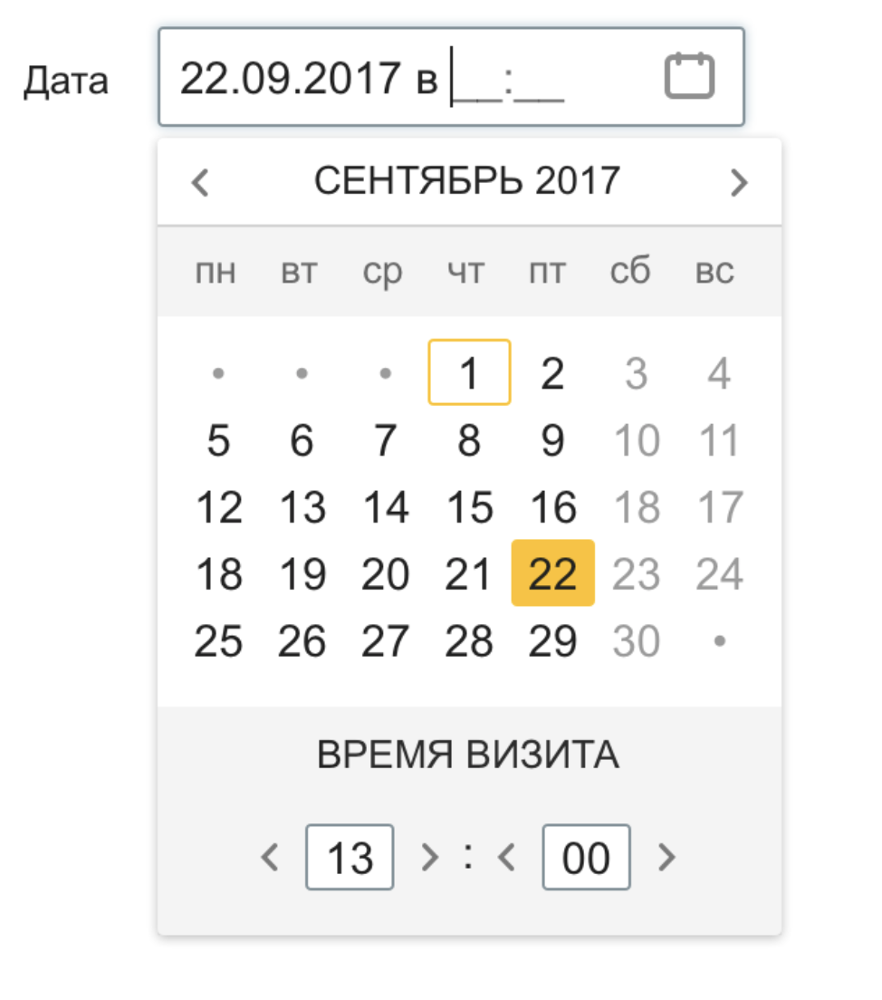
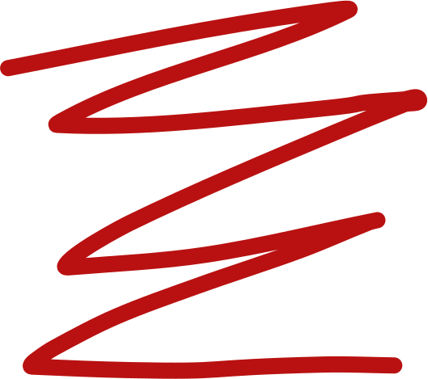
aria-hidden="true"
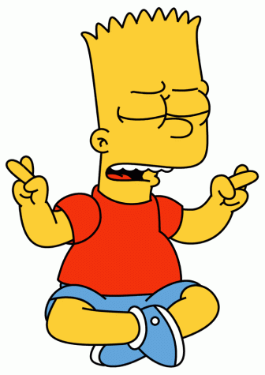
Совершенство достигнуто не тогда, когда нечего добавить, а когда нечего убрать.
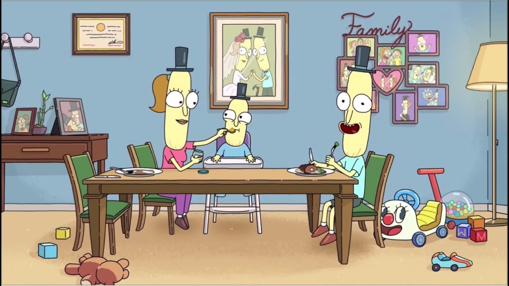
Антон Есауленко
